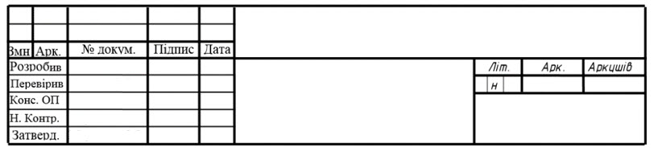
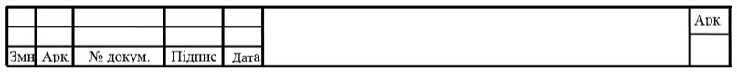
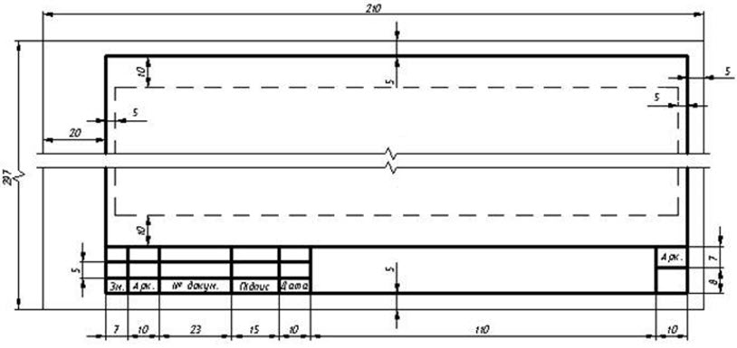
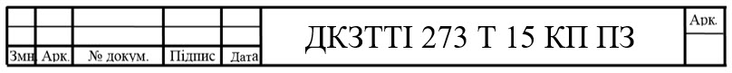

2.1 Пояснювальна записка
Записка складається з 25-30 аркушів формату А4 (210х297). На першому аркуші розміщують основний напис форми 2 згідно з ДСТУ 2.104-2006 (рисунок 2.1), на всіх інших аркушах – форми 2а (рисунок 2.2). Пояснювальна записка оформляється на одній стороні аркуша формату А4.

Рисунок 2.1 – Основний напис форми 2 (заголовний лист)

Рисунок 2.2 – Основний напис форми 2а (наступні листи)
Кожен аркуш тексту повинен мати межі тексту з дотриманням таких розмірів полів: верхній і ніжній – не менше 10 мм, правий і лівий – не менше 5 мм відносно рамки аркуша.

Рисунок
2.3 – Межі тексту та розміри аркуша пояснювальної записки
Обов’язковою вимогою до курсової роботи є написання її державною мовою, за винятком списку використаної літератури, де використане джерело записується мовою видання. Текст пояснювальної записки виконується рукописним способом, чітко, на одній стороні аркуша (виняток – бланк завдання) чорнилами або пастою чорного кольору. Допускається виконання текстових документів машинним (за допомогою комп’ютерної техніки) способом. Машинним способом виконують згідно з вимогами стандарту на виконання документів з використанням друкувальних і графічних пристроїв виведення ЕОМ.
Текст
записки набирається шрифтом Times New Roman, рядковими літерами, зображення
світле, нарис звичайний, розмір 14 пт. Міжрядковий інтервал тексту встановлювати
рівним 1,15 пункти (5 мм). Вирівнювання тексту – по ширині сторінки.
Абзацний
відступ 15-17 мм або 5 знаків від початку рядка, повинен бути однаковим в усьому
тексті, в т.ч. і для назв розділів і підрозділів. Абзаци основного тексту не
відокремлюються один від одного.
Окремі
слова, формули, знаки, які вписують в надрукований текст, мають бути чорного
кольору.
Помилки,
описки та графічні неточності допускається виправляти підчищенням або
підфарбуванням білою фарбою (коректором) і нанесенням на тому ж місці або між
рядками виправленого зображення. Виправлення повинно бути того ж кольору, що і
основний текст. Не допускається наявність на сторінці більше 4 виправлень.
Скорочення
слів і словосполучень в звіті виконується відповідно до чинних стандартів з
бібліотечної та видавничої справи.
Текст
пояснювальної записки розділюють на розділи та підрозділи. Кожен розділ тексту
повинен починатися з нової сторінки. Підрозділи є продовженням розділу, тому
починаються в межах даного розділу. Розділи та підрозділи повинні мати
заголовки. Пункти та підпункти можуть мати заголовки. Найменування розділів і
підрозділів повинні бути лаконічними, відповідати змісту. Заголовки структурних
елементів і заголовки розділів друкують шрифтом Times New Roman, розмір 14 пт, з
прописної літери, нарис звичайний, зображення світле і розташовують з абзаца без
крапки в кінці, не підкреслюючи, вирівнювання по лівому краю аркуша. У випадку
виконання рукописним способом слід використовувати креслярський шрифт (тип Б)
відповідного розміру
Заголовки
підрозділів, пунктів і підпунктів документу слід починати з абзацного відступу і
друкувати з прописної літери шрифтом Times New Roman, розмір 14 пт, зображення
світле, нарис звичайний без крапки в кінці, не підкреслюючи, вирівнювання по
лівому краю сторінки. У випадку розташування заголовку на декількох строках,
починати наступну строку допускається з абзацного відступу (навпроти номеру
заголовку).
Якщо
заголовок складається з двох і більше речень, їх розділяють крапками.
Перенесення слів в заголовку не допускається.
Відстань
між заголовком структурного елементу, розділу, підрозділу, пункту чи підпункту і
подальшим чи попереднім текстом має бути не менше, ніж два рядки (не менше 15
мм), а між заголовками не менше одного рядка (8 мм). Інтервал між рядками у
заголовку розділів, підрозділів, пунктів підпунктів приймають таким, як у
тексті.
Не
допускається розміщувати назву підрозділу, а також пункту і підпункту у нижній
частині сторінки, якщо після неї розміщено тільки один рядок тексту або текст
відсутній.
Розділи,
підрозділи, пункти та підпункти слід нумерувати арабськими цифрами. Розділи
повинні мати порядкові номери, які позначаються арабськими цифрами, крапка після
номеру не ставиться, наприклад , 1, 2, 3, і т. д.
Підрозділи
повинні мати нумерацію в межах кожного розділу. Номер підрозділу складається з
номера розділу та підрозділу відокремлених крапкою. Після номеру підрозділу
крапку не ставлять, наприклад, 1.1, 1.2, і т. д.
Підрозділи
можуть складатися з декількох пунктів. Номера пунктів повинні складатися з
номера розділу та підрозділу і пункту відокремлених крапкою. Після номера пункту
крапку не ставлять, наприклад, 1.1, 1.2, або 1.1.1, 1.1.2 і
т.д.
Номер
підпункту складається з номера розділу, порядкового номера підрозділу,
порядкового номера пункту і порядкового номера підпункту, відокремлених крапкою,
наприклад, 1.1.1.1, 1.1.1.2, 1.1.1.3, і т.д.
Якщо
розділ або підрозділ складається з одного пункту, або пункт складається з одного
підпункту, його нумерують.
Структурні
елементи «Зміст», «Вступ», «Перелік використаних джерел» не нумерують, а їх
назви виконують роль заголовків структурних елементів
(розділів).
Переліки
за потреби можуть бути наведені в середині пункту або підпункту. Перед переліком
ставлять двокрапку. Вкінці переліку ставиться крапка.
Перед
кожною позицією переліку слід ставити малу літеру української абетки з дужкою,
або, не нумеруючи - дефіс (перший рівень деталізації). Для подальшої деталізації
переліку слід використовувати арабські цифри з дужкою (другий рівень
деталізації). Наприклад:
а)
біполярні транзистори;
б)
однопереходні транзистори:
1)
з p-базою;
2)
з n-базою;
в)
польові транзистори.
Переліки
першого рівня деталізації друкують маленькими літерами з абзацного відступу,
другого рівня - з абзацним відступом правіше відповідно місця розташування переліків першого
рівня.
Першим
аркушем текстового документу є титульний аркуш, який виконується на аркуші
формату А4 і заповнюється креслярським шрифтом пастою чорного кольору. Переноси
слів в заголовках титульного аркушу не допускаються. Титульний аркуш містить
дані, які подають в такій послідовності : а) відомості про міністерство, вищий
навчальний заклад; б) повну назву документа; в) тему проекту (роботи); г)
підписи керівника і студента, який виконав проект (роботу), а також погодження
заступником директора з навчальної роботи, нижче особистих підписів проставляють
дату підписання. Елементи дати наводять арабськими цифрами в рядок в такий
послідовності : число, місяць, рік. Наприклад, дату 01 липня 2016 року слід
оформляти так: 01.06.2016 р. Допускається словесно – цифровий спосіб оформлення
дат: 01 липня 2016 року. д) рік складання пояснювальної
записки.
Зміст
повинен включати номери і
заголовки всіх структурних елементів роботи та
її підрозділів. В
кінці останнього рядка заголовку вказують номер сторінки, з
якої починається
структурний елемент (з
вирівнюванням по правому краю сторінки, на одному рівні). Усі заголовки структурних елементів
пишуть прописними літерами, крім першої, розміщуючи з абзацного
відступу. Аркуш змісту повинен мати
основний напис ф. 2 згідно ДСТУ ГОСТ 2.104-2006 (40 мм), який відповідно
заповнюється.
Текстовим
і графічним роботам присвоюється позначення, що повинно мати таку
структуру:
де
ХХ – шифр студента (за списком журналу групи або за залікової
книжки);
YY
– літерний код роботи (ПЗ – пояснювальна записка, ГЧ – графічна
частина).
Позначення виконується шрифтом Times New Roman, розмір 22 пт, зображення світле, нарис звичайний, не підкреслюючи, вирівнювання по центру відповідної графи основного напису. У випадку виконання рукописним способом використовувати креслярський шрифт №7 (тип Б).

Рисунок 2.4 – Приклад оформлення позначення пояснювальної записки
Пояснювальну
записку брошурують або переплітають
у наступному порядку:
- титульний лист;
- завдання на курсовий проект;
- лист рецензії;
- зміст записки;
- текст записки;
-
додатки.
Сторінки
звіту нумеруються арабськими цифрами, додержуючись наскрізної нумерації в усьому
тексті. Номер сторінки проставляють у відповідній графі основного напису без
крапки в кінці. Титульний аркуш, завдання на курсовий проект, рецензію,
включають до загальної нумерації сторінок, але номери сторінок на них не
проставляють. Ілюстрації і таблиці, розміщені на окремих сторінках, включають до
загальної нумерації сторінок з проставлянням номеру
сторінки.
Приклади
оформлення пояснювальної записки наведені у додатку
H.